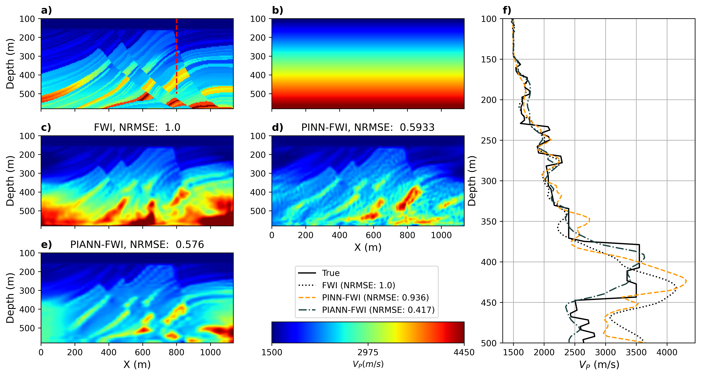
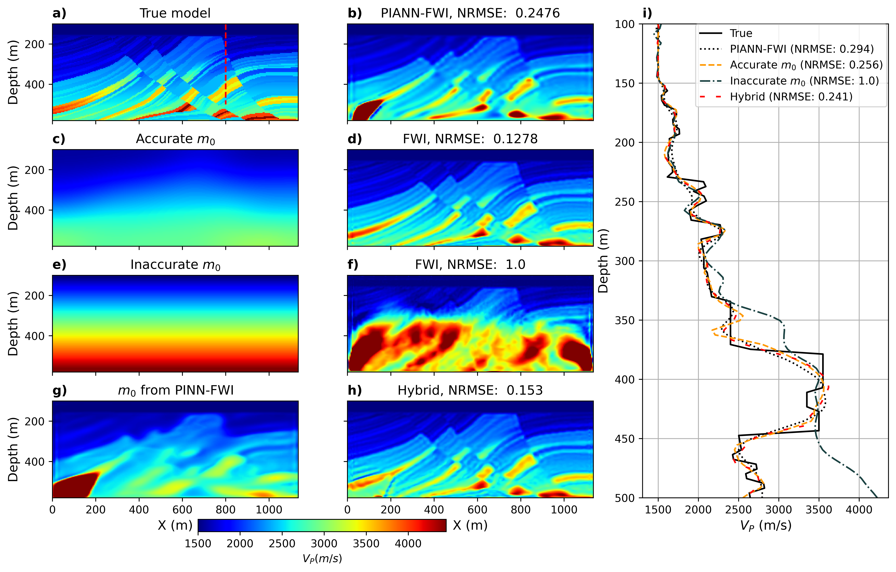

Physics-Guided Neural Networks for Full-Waveform Inversion (PGNN-FWI)¶
PGNN-FWI¶

..caption:: This is preliminary documentation for Physics-Guided Neural Networks for Full-Waveform Inversion (PGNN-FWI)
In this repository, I implemented the physics-guided neural network (PGNN) for full-waveform inversion. This PGNN can be implemented with or without attention block. The architecture of their study is shown in the following figure.
For running the code, you should use this notebook. The required parameters for running this notebook should be set in this config file.
Note: I have commented cell 3 in this notebook, you should run this cell whenever you change an acquisition parameter (and for the first time using the codes).
Note: Please use the requirements file (written in the jupyter file) to install the packages with specified versions to be sure everything works.
pip install -r requirements.txt
- In this repo, there are four scripts for running FWI:
- 1. pinn_fwi.py for performing PGNN- or PGANN-FWI.2. original_fwi.py for running the conventional FWI (Not available).3. pinn_for_init.py for performing PGNN- or PGANN-FWI to create an initial model and use that to perform the conventional FWI (Not available).4. pinn_fwi.ipynb for performing PGNN- or PGANN-FWI, but this notebook might not be updated.
The result of running this code for 22 shots with 2500 epochs on the Marmousi model is shown in the following figures.
 For a faster convergence (300 epochs), I considered geophones around the model and the results are  where the hybrid method is using the PIANN-FWI for creating only initial model.
Tools
References:¶
@inproceedings{mardan2024pgann_eage,
title = {Physics-guided attention-based neural networks for full-waveform inversion},
author = {Mardan, Amir and Fabien-Ouellet, Gabriel},
year = {2024},
booktitle = {85$^{th}$ {EAGE} Annual Conference \& Exhibition},
publisher = {European Association of Geoscientists \& Engineers},
pages = {1-5},
doi = {}
}